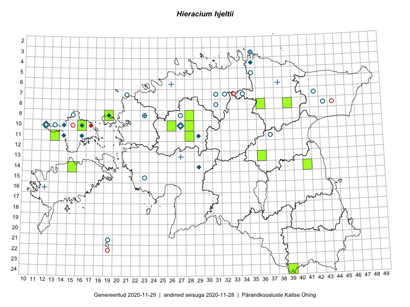

Hieracium hjeltii — Hjelti hunditubakas
Asteraceae :: Hieracium hjeltii Norrl. (55); Hieracium murorum subsp. hjeltii (Norrl.) Zahn (7); Hieracium integratum (Dahlst. ex Stenstr.) Dahlst. (1)

Kaart põhineb 63 kirjel:
herbaareksemplare 63
Taime kaasaegsed ja ajaloolised leiukohad asuvad 33 ruudus.
Tingmärgid ja ruutude arvud periooditi (U1 / V2 )
█ 2006–2020 (11/–)
◆/◇ 1971–2005 (5/9)
○ 1921–1970 (18/20)
+ kuni 1920 (1/4)
× hävinud (–/0)
? kaheldav (–/0)
| Ruut | Leidja(d) | Leiuaeg | Kirje |
|---|---|---|---|
| 10-12 | Erast Parmasto, Harald Rebane | 1956-06-30 | TAA0000031: Hieracium hjeltii Norrl. |
| 14-29 | Heljo Krall | 1985-06-28 | TAA0000032: Hieracium hjeltii Norrl. |
| 09-19 | Toomas Kukk | 1996-06-14 | TAA0000034: Hieracium hjeltii Norrl. |
| 11-37 | Albert Üksip | 1943-07-15 | TAA0000035: Hieracium hjeltii Norrl. |
| 08-31 | Albert Üksip | 1948-07-08 | TAA0000036: Hieracium hjeltii Norrl. |
| 07-42 | Vilma Kuusk | 1961-06-27 | TAA0000037: Hieracium hjeltii Norrl. |
| 10-13 | Erast Parmasto, Harald Rebane | 1956-06-30 | TAA0000038: Hieracium hjeltii Norrl. |
| 07-21 | Gustav Vilbaste | 1933-08-07 | TAA0000040: Hieracium hjeltii Norrl. |
| 07-32 | Gustav Vilbaste | 1935-07-24 | TAA0000041: Hieracium hjeltii Norrl. |
| 07-32 | Gustav Vilbaste | 1935-07-24 | TAA0000042: Hieracium hjeltii Norrl. |
| 05-35 | Juta Kaasik, Kuulo Kalamees | 1956-06-25 | TAA0000043: Hieracium hjeltii Norrl. |
| 09-23 | Albert Üksip | 1960-08-07 | TAA0000044: Hieracium hjeltii Norrl. |
| 07-31 | Maret Kask | 1958-08-03 | TAA0000045: Hieracium hjeltii Norrl. |
| 03-35 | Rudolph Lehbert | 1923-07-07 | TAA0000046: Hieracium hjeltii Norrl. |
| 03-35 | Rudolph Lehbert | 1923-07-07 | TAA0000047: Hieracium hjeltii Norrl. |
| 03-35 | Rudolph Lehbert | 1923-07-07 | TAA0000048: Hieracium hjeltii Norrl. |
| 03-35 | Rudolph Lehbert | 1923-07-07 | TAA0000049: Hieracium hjeltii Norrl. |
| 03-35 | Rudolph Lehbert | 1923-07-07 | TAA0000050: Hieracium hjeltii Norrl. |
| 03-35 | Rudolph Lehbert | 1923-07-07 | TAA0000051: Hieracium hjeltii Norrl. |
| 03-35 | Rudolph Lehbert | 1923-07-07 | TAA0000052: Hieracium hjeltii Norrl. |
| 03-35 | Rudolph Lehbert | 1923-07-07 | TAA0000053: Hieracium hjeltii Norrl. |
| 03-35 | Rudolph Lehbert | 1923-07-09 | TAA0000054: Hieracium hjeltii Norrl. |
| 03-35 | Rudolph Lehbert | 1923-07-09 | TAA0000055: Hieracium hjeltii Norrl. |
| 03-35 | Rudolph Lehbert | 1923-07-09 | TAA0000056: Hieracium hjeltii Norrl. |
| 03-35 | Rudolph Lehbert | 1923-07-09 | TAA0000057: Hieracium hjeltii Norrl. |
| 03-35 | Rudolph Lehbert | 1923-07-09 | TAA0000059: Hieracium hjeltii Norrl. |
| 03-35 | Rudolph Lehbert | 1923-07-09 | TAA0000060: Hieracium hjeltii Norrl. |
| 03-35 | Rudolph Lehbert | 1923-07-10 | TAA0000061: Hieracium hjeltii Norrl. |
| 10-12 | Toomas Kukk | 2005-07-11 | TAA0007256: Hieracium hjeltii Norrl. |
| 10-12 | Toomas Kukk | 2005-07-11 | TAA0007257: Hieracium hjeltii Norrl. |
| 07-34 | Albert Üksip | 1940-07-11 | TU267696: Hieracium murorum subsp. hjeltii (Norrl.) Zahn |
| 11-37 | Albert Üksip | 1943-07-15 | TU267697: Hieracium murorum subsp. hjeltii (Norrl.) Zahn |
| 07-34 | Albina Üksip | 1935-07-11 | TU267698: Hieracium murorum subsp. hjeltii (Norrl.) Zahn |
| 08-43 | L. Pihlapuu | 1963-06-26 | TU267699: Hieracium hjeltii Norrl. |
| 08-31 | Albert Üksip | 1948-07-08 | TU267700: Hieracium murorum subsp. hjeltii (Norrl.) Zahn |
| 08-31 | Albert Üksip | 1948-07-08 | TU267701: Hieracium murorum subsp. hjeltii (Norrl.) Zahn |
| 08-31 | Albert Üksip | 1948-07-08 | TU267702: Hieracium murorum subsp. hjeltii (Norrl.) Zahn |
| 21-19 | Elmar Lepik | 1934-06-18 | TU267703: Hieracium hjeltii Norrl. |
| 15-23 | S. Kaaber | 1926-07-12 | TU267704: Hieracium murorum subsp. hjeltii (Norrl.) Zahn |
| 08-43 | V. Masing | 1962-08-03 | TU267705: Hieracium hjeltii Norrl. |
| 04-35 | M. Ratas | 1972-06-12 | TU267706: Hieracium hjeltii Norrl. |
| 21-19 | Elmar Lepik | 1931-06-18 | TAM0004957: Hieracium integratum (Dahlst. ex Stenstr.) Dahlst. |
| 09-27 | H. Hendrikson | 1934-09-23 | TAM0019053: Hieracium hjeltii Norrl. |
| 09-27 | H. Hendrikson | 1934-09-15 | TAM0019054: Hieracium hjeltii Norrl. |
| 09-27 | H. Hendrikson | 1934-09-15 | TAM0019055: Hieracium hjeltii Norrl. |
| 10-27 | H. Hendrikson | 1934-08-02 | TAM0019056: Hieracium hjeltii Norrl. |
| 09-27 | H. Hendrikson | 1934-09-15 | TAM0019057: Hieracium hjeltii Norrl. |
| 09-19 | Mare Leis | 2007-06-08 | TAA0076939: Hieracium hjeltii Norrl. |
| 10-16 | Toomas Kukk | 2005-07-13 | TAA0007244: Hieracium hjeltii Norrl. |
| 10-16 | Toomas Kukk | 2005-07-13 | TAA0007245: Hieracium hjeltii Norrl. |
| 10-28 | Peedu Saar, Timo Luhamäe, Johannes Kõdar | 2016-07-06 | TAA0133253: Hieracium hjeltii Norrl. |
| 14-41 | Mare Leis | 2015-08-08 | TAA0133335: Hieracium hjeltii Norrl. |
| 14-41 | Mare Leis | 2015-08-08 | TAA0133337: Hieracium hjeltii Norrl. |
| 14-15 | Toomas Kukk, Eerik Leibak | 2015-08-10 | TAA0135549: Hieracium hjeltii Norrl. |
| 24-39 | Anneli Palo | 2016-06-05 | TAA0136340: Hieracium hjeltii Norrl. |
| 10-26 | Meeli Mesipuu, Sirje Azarov | 2016-07-06 | TAA0137722: Hieracium hjeltii Norrl. |
| 11-13 | Eeva-Maria Jeletsky, Tarmo Niitla | 2015-06-28 | TAA0119220: Hieracium hjeltii Norrl. |
| 09-28 | Liina Oja, Rein Kalamees | 2016-07-06 | TAA0138527: Hieracium hjeltii Norrl. |
| 08-36 | Timo Luhamäe, Thea Kull | 2016-07-27 | TAA0142146: Hieracium hjeltii Norrl. |
| 11-28 | Thea Kull, Ott Luuk | 2017-08-08 | TAA0142317: Hieracium hjeltii Norrl. |
| 13-36 | Meeli Mesipuu, Timo Luhamäe | 2015-06-12 | TAA0137562: Hieracium hjeltii Norrl. |
| 09-15 | Gustav Vilbaste | 1930-06-25 | TAA0000039: Hieracium hjeltii Norrl. |
| 06-26 | P. Glehn | 1856-06-30 | TAM0125653: Hieracium hjeltii Norrl. |
Ruutude arv uue atlase andmekogu järgi. Muuhulgas arvestab vanemat herbaariumi, 2005. aasta atlase välitöölehtedelt uuesti digitaliseeritud andmeid jne. Uue atlase andmekogust pärinevad andmed on kaardile kantud siniste sümbolitega.↩︎
Ruutude arv 2005. aasta atlase (Kukk, T., Kull, T., Eesti taimede levikuatlas. Eesti Maaülikool, Põllumajandus- ja Keskkonnainstituut, Tartu, 2005) järgi. Andmeallikana on kasutatud levik.exe programmi, kus igas ruudus on registreeritud vaid uusim leid. Seetõttu on vanemate perioodide kohta andmed puudulikud. Kasutatud levik.exe andmestikus leidub mõningaid kõrvalekaldeid atlase trükis ilmunud versioonist, sagedamini tarnade ja käpaliste seas. Lisaks leidub selles andmestikus valik liike (peamiselt väheste leidudega tulnuktaimed), mille kaarte trükis ei avaldatud. Vana atlase andmed ruutudest, milles ei ole uue atlase andmekogus leide enne 2006. aastat, on kaardil esitatud punaste sümbolitega. Vana atlase andmetel hävinud ja kaheldavaid leiukohti pole hilisemate (taas)leidude põhjal korrigeeritud.↩︎